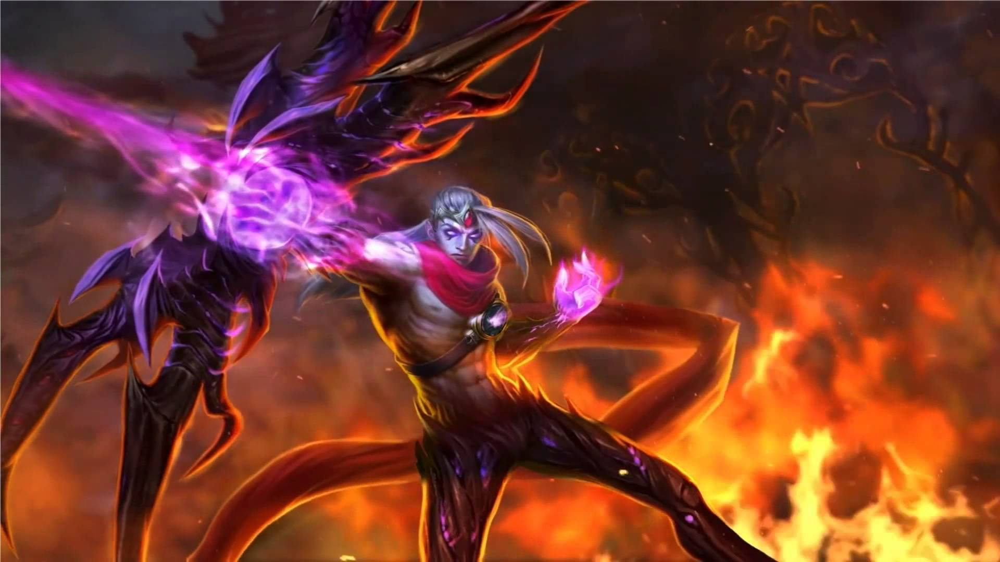

League Of Legends Wiki - Champions - ADCarry
The ADCarry is a champion that deals strong, continuous damage with their basic attacks and scales with attack-related stats - i.e. attack damage, critical strike chance and atttack speed.
A couple of ADCarry champions are:
Varus
Jinx
Kalista
KogMaw

Varus, The Arrow Of Retribution His abilities are: Piercing Arrow Varus channels for up to 4 seconds, increasing piercing arrow's range and damage.
Blighted Quiver Varus's basic attacks deal bonus magic damage and apply Blighted Quiver Blight for 6 seconds, stacking up to 3 times.
Hail Of Arrows Varus fires a hail of arrows that deals physical damage to all enemies in the target area.
Chain Of Corruption ( ult ) Varus flings out a tendril of corruption that infects the first enemy champion hit, dealing magic damage.